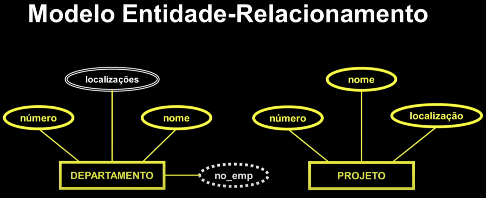
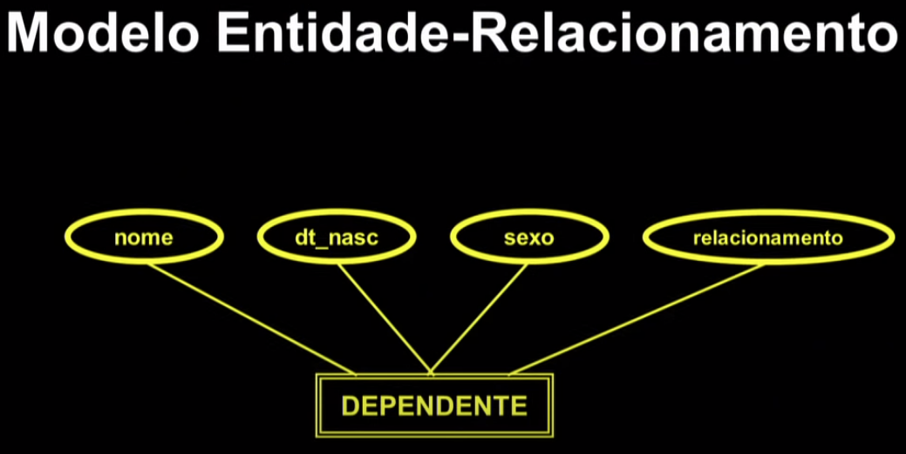
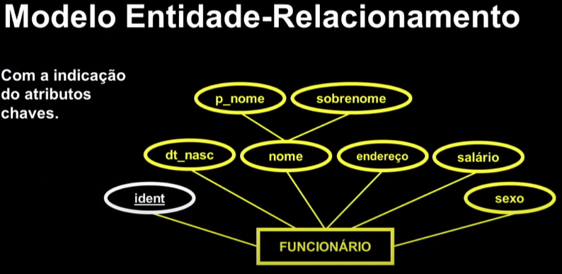
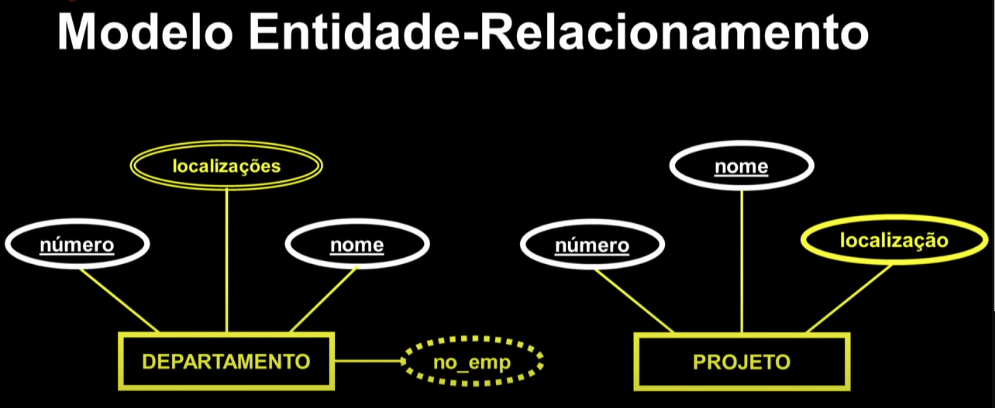

Disciplinas
-
BANCO DE DADOS-T01-2024-1 Concluído
Materiais
Vídeo 1 - Bancos de Dados - Aula 02 – Modelo Entidade-Relacionamento (MER) - Parte I. sendProfessor ministrante: Sarajane Peres.
Conteúdo
Modelo Entidade-Relacionamento (MER).
Modelagem de dados.
- Para que seja possível construir um banco de dados, é necessário estabelecer a forma como os dados serão armazenados nesse banco.
- Estabelecer a forma como os dados serão armazenados implica na construção de um modelo para a organização dos dados: uma modelagem de dados.
Contexto didático.
Uma empresa:Cada departamento da empresa possui um nome e um número exclusivos.
Um funcionário gerencia um departamento e a data de início desse trabalho de gerência deve ser registrada.
Um mesmo departamento pode estar localizado em diferentes prédios.
Os departamentos possuem vários empregados e controlam uma série de projetos
Modelo Entidade-Relacionamento (MER).
É um modelo de dados conceitual, de alto nível, que permite expressar a organização que deve ser imposta aos dados em um banco de dados.
Existe uma notação baseada em diagramas para a construção de um MER: o diagrama ER.
Elementos do diagrama ER.- Entidades.
- Atributos.
- Chaves.
- Relacionamentos.
- Cardinalidades.
Entidade (forte): é um objeto básico do MER usado para representar uma coisa no mundo real, física ou conceitual, com existência independente.
Se tal existência só faz sentido quando está relacionada a outra entidade, a entidade é dita fraca.
Heurística: no discurso que descreve o mundo real, as entidades são frequentemente mencionadas, e geralmente são descritas em termos de suas propriedades.
Exemplo (Entidade).Cada departamento da empresa possui um nome e um número exclusivos. Um funcionário gerencia um departamento e a data de início desse trabalho de gerência deve ser registrada. Um mesmo departamento pode estar localizado em diferentes prédios. Os departamentos possuem vários empregados e controlam uma série de projetos ...
Departamento pode ser modelado como uma entidade.
No diagrama ER, as entidades são representadas por retângulos.
- DEPARTAMENTO.
- FUNCIONÁRIO.
- PROJETO.
- DEPENDENTE.
- Entidade fraca.
Atributo: é uma propriedade que descreve uma entidade.
Exemplo: Um funcionário possui um número que o identifica (identidade), nome, endereço, salário e data de nascimento.
Os atributos da entidade FUNCIONÁRIO estão destacados em negrito.
No diagrama ER, os atributos são representados por elipses.
+-------------+
| FUNCIONÁRIO |
+-------------+
( ident )
( nome )
( endereço )
( salário )
( dt_nasc )
+----------+
Tipos de atributos:
- simples x compostos.
- univalorados x multivalorados.
- armazenados x derivados.
Atributo com derivado:
Entidade Fraca:
 Conceitos:- Um tipo entidade define uma coleção, ou conjunto, de entidades que têm os mesmos atributos. É o ESQUEMA.
- A coleção de todas as entidades de um tipo entidade é chamada de conjunto entidade. É a INSTÂNCIA.
- Nome do tipo entidade:
- FUNCIONÁRIO_SIMPLES (nome, salário).
- Conjunto entidade INSTÂNCIA.
- com duas entidades individuais.
- func1.
- (Carla de Paula, 5.000,00).
- func2.
- (Jonas Almeida, 3.000,00).
Atributo chave: um tipo entidade, usualmente, tem um ou mais atributos que assumem valores distintos para cada entidade individual dentro do conjunto entidade. Esse atributo, ou conjunto de atributos (chave composta), identifica unicamente uma entidade.
Restrição de unicidade: proíbe que duas entidades, em um mesmo conjunto entidade, tenham os mesmos valores no seu atributo chave.
Com a indicação do atributos chaves:  Dois Atributos chaves:  Uma entidade fraca possui uma chave parcial:Estes slides estão baseados na bibliografia:
Modelo Entidade-Relacionamento (MER) Parte I: entidades, atributos, chaves.